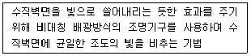
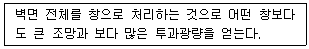
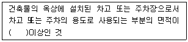
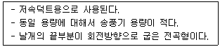
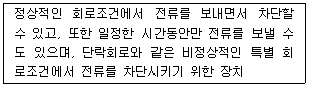
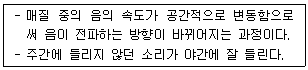
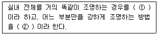

1과목: 실내디자인론
1. 실내디자인의 프로젝트 분류와 대상의 연결이 옳지 않은 것은?
2. 유닛 가구(unit furniture)에 관한 설명으로 옳은 것은?
3. 르 꼬르뷔지에의 모듈러(Modulor)와 가장 관계가 깊은 디자인 원리는?
4. 질감(texture)에 관한 설명으로 옳지 않은 것은?
5. 다음 중 죠닝(zoning)에서 죤(zone)의 설정시 고려할 사항과 가장 거리가 먼 것은?
6. 3차원 입체로서의 공간을 가장 적절하게 표현한 용어는?
7. 사무실의 개방식 배치의 한 형식으로 업무와 환경을 경영관리 및 환경적 측면에서 개선한 것으로 사무 업무를 사람의 흐름과 정보의 흐름을 매체로 효율적인 네트워크가 되도록 배치하는 방법은?
8. 쇼륨의 공간구성은 상품전시공간, 상담공간, 어트랙션(attraction)공간, 서비스공간, 통로공간, 출입구를 포함한 파사드로 구성되어 진다. 다음 중 어트랙션(attraction)공간에 관한 설명으로 가장 알맞은 것은?
9. 실내공간의 동선에 관한 설명으로 옳지 않은 것은?
10. 버내큘러 디자인에 관한 설명으로 옳지 않은 것은?
11. 리듬의 원리에 해당하지 않는 것은?
12. 다음 중 가시성의 결정 요소와 가장 거리가 먼 것은?
13. 실내디자인의 영역에 관한 설명으로 옳지 않은 것은?
14. 형태(form)의 지각심리에 관한 설명으로 옳지 않은 것은?
15. 주택의 현관에 관한 설명으로 옳지 않은 것은?
16. 다음 설명에 알맞은 조명의 연출기법은?

17. 주거공간을 개인공간, 사회공간, 노동공간, 보건·위생공간 등으로 구분할 때, 다음 중 사회공간에 속하는 것은?
18. 상품 진열계획에서 고객에게 가장 편한 진열높이를 말하는 골든 스페이스(golden space)의 범위는?
19. 건축화 조명에 관한 설명으로 옳지 않은 것은?
20. 다음 설명에 알맞은 창의 종류는?

2과목: 색채학
21. 동일 색상 내에서 톤의 차이를 두어 배색하는 방법이며 명도 그라데이션을 주로 활요하는 배색기법은?
22. 다음 배색에서 명도차가 가장 큰 배색은?
23. 같은 형태(形態), 같은 면적에서 그 크기가 가장 크게 보이는 색은? (단, 그 색이 동일한 배경색 위에 있을 때)
24. 다음 중 색의 채도가 가장 높은 색상은?
25. 비렌(Birren)의 색과 형의 연결로 틀린 것은?
26. 스컬러 모멘트(scalar moment)라는 면적 비례를 적용하여 조화론을 전개한 학자는?
27. 오스트발트(Ostwald) 조화론의 등색상삼각형의 조화가 아닌 것은?
28. 다음 빛의 혼합 중 틀린 것은?
29. 컬러 TV의 화상의 혼색방법은?
30. 우리 눈의 망막상에서 어두운 곳에서는 약한 광선을 받아들이며 색상은 보이지 않고 명암만을 판별하는 시세포는?
31. 색을 다른 말로 표현할 때 적당하지 않는 것은?
32. 먼셀(Munsell) 표색계에 기본을 둔 표준색표의 구성에서 R의 경우 1R, 2R, 3R, ··· 10R 로 10등분하여 나눈다. 다음 중 5R에 해당되는 색은?
33. 물체를 조명하는 광원색의 성질(분광분포)에 따라서 같은 물체라도 색이 달라져 보이게 되는 것은?
34. 다음 색에 대한 설명 중 틀린 것은?
35. 먼셀 색채조화의 원리로 틀린 것은?
36. 다음 중 빨강 사과를 빨갛게 느끼는 이유로 옳은 것은?
37. 어두워지기 시작하는 저녁 무럽에 적색계의 색보다 청색계의 색이 더 밝아 보이는 지각현상은?
38. 다음 관용색명 중 동물의 이름과 관련된 색명은?
39. 영국의 과학자 영(T. Young 1773-1829)과 헬름홀즈가 발표한 색각의 기본이 되는 3가지 색은?
40. 다음 색 중 보색 관계가 아닌 것은?
3과목: 인간공학
41. 다음 중 소음에 노출되었을 때의 생리적 영향과 가장 거리가 먼 것은?
42. 다음 중 소리의 특성과 가장 거리가 먼 것은?
43. 귀의 구조 중에서 외이도와 중이의 경계 부위에 위치하며, 0.5 ~ 0.9cm2의 넓이를 가지며 소리 압력의 변화에 따라 진동하는 것은?
44. 다음 중 소음수준의 측정단위로 표시되는 것은?
45. 어떤 의미를 전달하기 위한 부호의 유형 중 교통표지판의 삼각형은 주의를, 사각형은 안내를 나타내듯 부호가 이미 고안되어 있으며 이를 배워야 하는 부호를 무엇이라 하는가?
46. 여러 개의 정량적 표시장치를 쌍태 점검에 사용할 경우 일반적으로 정상 상태의 지침 방향은 몇 시 방향으로 정렬하는 것이 가장 정확하게 인식할 수 있겠는가?
47. 다음 중 문자의 크기에 있어 흰 종이에 검은 문자를 쓸 때 두께와 높이의 비율로 가장 적절한 것은?
48. 다음 중 밝은 곳에서 어두운 곳에 적응하기 위한 눈의 암순응을 촉진하기 위해 사용하는 색안경으로 가장 적합한 것은?
49. 다음 중 인체측정자료를 이용하여 설계할 때 응용원칙과 적용의 연결이 적절하지 않은 것은?
50. 다음 중 일반적인 입식 작업대의 높이에 관한 설명으로 옳은 것은?
51. 실현 가능성이 같은 2개의 대안 중 하나가 명시되었을 때 얻을 수 있는 정보량은 얼마인가?
52. 다음 중 눈과 대상물이 이루는 시각이 2분(‘)인 사람의 시력(최소가분시력)으로 옳은 것은?
53. 다음 중 동일한 짐을 나르는 방법에 따른 에너지 소비량(산소소비량)이 가장 많은 것은?
54. 사람이 자동차나 비행기를 조종할 때 긴장감의 정도를 파악하기 위하여 심박수, 호흡률, 뇌 전위, 혈압 등을 조사하는데, 이는 다음 중 어느 것을 지표로서 이용하는 경우에 해당되는가?
55. 표적 물체나 관측자 또는 모두가 움직이는 경우에는 시력의 역치(threshold)가 감소하게 되는데, 다음 중 이러한 상황에서의 시식별 능력을 무엇이라 하는가?
56. 다음 중 인간공학적 의자 디자인에 있어 고려사항으로 가장 거리가 먼 것은?
57. 다음 중 신체부위의 유형에서 팔꿈치를 굽히는 것과 같이 신체 부위 간의 각도가 감소하는 동작을 무엇이라 하는가?
58. 다음 중 색각(色覺)을 변화시키는 외적 조건에 해당되지 않은 것은?
59. 다음 중 시각적 점멸 융합 주파수(VFF)에 영향을 주는 변수들을 대한 설명으로 옳은 것은?
60. 다음 중 시각적 암호의 사용에 있어 숫자, 색, 영문자, 구성 암호를 이용할 경우 주어진 임무(종류의 판별)에 대한 성능이 가장 우수한 것부터 낮은 순으로 올바르게 나열한 것은?
4과목: 건축재료
61. 점토 반죽에 샤모테를 첨가하여 사용하는 경우가 있는데 이 샤모테의 사용목적은?
62. 목재의 신축에 대한 설명 중 옳은 것은?
63. 고로슬래그 분말을 시멘트 혼화재로 사용한 콘크리트의 성질에 대한 설명 중 옳지 않은 것은?
64. 시멘트의 조성화합물 중 수화열이 적고 장기강도와 내화학성이 크며 건조수축이 작은 성분은?
65. 침엽수의 섬유방향 강도에 대한 일반적인 대소관계를 옳게 표기한 것은?
66. 고무계로 내유성, 내약품성이 우수하여 줄눈재 또는 구멍을 메꾸는데 사용되는 코킹재는?
67. 암석을 이루고 있는 조암광물에 대한 설명으로 옳지 않은 것은?
68. 금속부식을 방지하기 위한 방법 중 옳은 것은?
69. 다음 중 비닐벽지에 속하지 않은 것은?
70. 골제의 단위용적 중량을 계산할 때 골재는 어느 상태를 기준으로 하는가? (단, 굵은 골재가 아닌 경우)
71. 원칙적으로 풀 또는 여물을 사용하지 않고 물로 연화하여 사용하는 것으로 공기 중의 탄산가스와 결합하여 경화하는 미장재료는?
72. 한중콘크리트 시공 시 주의사항에 대한 설명으로 옳지 않은 것은?
73. 도료 중 주로 목재면의 투명도장에 쓰이고 오일 니스에 비하여 도막이 얇으나 견고하며, 담색으로서 우아한 광택이 있고 내부용으로 쓰이는 것은?
74. 경량콘크리트(Light weight Concrete)제품의 특성에 대한 설명 중 옳지 않은 것은?
75. 보통 투명 창유리에 관한 설명 중 옳지 않은 것은?
76. 유리가 불화수소에 부식하는 성질을 이용하여 5mm이상 판유리면에 그림, 문자 등을 새긴 유리는?
77. 석회암이 변성된 것으로 강도가 높고 색채가 결이 아름다우나, 풍화하기 쉬우므로 주로 내장재로 사용되는 것은?
78. 다음 중 외벽용 타일 붙임재료로 가장 적당한 것은?
79. 양질의 도트 또는 장석분을 원료로 하며, 흡수율이 1%이하로 거의 없고 소성온도가 약 1230~1460℃인 점토 제품은?
80. 금속재료의 일반적 성질에 대한 설명으로 옳지 않은 것은?
5과목: 건축일반
81. 소규모건축물의 구조기준에 따른 조적조에서의 개구부에 대한 설명으로 옳지 않은 것은?
82. 목구조에 대한 설명으로 옳지 않은 것은?
83. 다음 중 플레이트 거더(plate girder)를 구성하는 기본원칙에 관한 설명 중 옳지 않은 것은?
84. 건축물을 건축하거나 대수선하는 경우에 구조기준 및 구조계산에 따라 그 구조의 안전을 확인하여야 하는 최소기준을 열거한 것으로 옳지 않은 것은?
85. 건축물에 설계자가 건축물에 대한 구조의 안전을 확인하는 경우에 건축구조기술사의 협력을 받아야 하는 경우에 해당되지 않는 것은?
86. 국토해양부령이 정하는 내화구조에 해당하는 기준으로 옳은 것은? (단, 벽의 경우)
87. 실내마감이 불연재료이고 자동식소화설비가 설치된 각 층 바닥면적이 1,000m2인 업무시설의 11층은 최소 몇 개의 영역으로 방화구획하여야 하는가?
88. 왕대공 지붕들의 부재 중 인장재가 아닌 것은?
89. 아라베스크(Arbesque) 장식문양과 거리가 먼 내용은?
90. 철골구조에서 사용되는 접합재·보강재에 대한 설명 중 옳지 않은 것은?
91. 실내장식물을 방염성능기준 이상으로 설치하여야 하는 특정 소방대상물에 해당하지 않는 것은?
92. 건축법상 승용승강기를 설치하여야 하는 대상건축물의 선정기준은?
93. 목재 접합부에 사용하는 철물과 철물이 저항하는 응력의 종류가 잘못 연결된 것은?
94. 건축물의 바깥쪽에 설치하는 피난계단의 구조에 대한 설명으로 옳지 않은 것은?
95. 특정소방대상물에 설치된 축전지실·통신기기실·전산실 등에 설치하여야 하는 소화설비는? (단, 바닥면적이 300m2 이상인 것)
96. 고딕 건축양식의 특징이 아닌 것은?
97. 다음 중 소방시설의 한 종류인 경보시설에 해당되지 않는 것은?
98. 다음은 옥내소화전설비를 설치하여야 하는 특정소방대상물에 대한 기준이다. ( )안에 알맞은 것은?

99. 철근콘크리트구조에서 철근과 콘크리트가 일체성이 될 수 있는 원리가 아닌 것은?
100. 건축물에 설치하는 급수·배수의 용도로 쓰이는 배관설비의 설치 및 구조기준으로 옳지 않은 것은?
6과목: 건축환경
101. 타임랙(time-lag)에 관한 설명으로 옳지 않은 것은?
102. 다음 설명에 알맞은 공기조화용 송풍기의 종류는?

103. 열관류율이 작은 벽을 만들어 단열효과를 얻고자 할 때 적당치 않은 것은?
104. 주광률을 가장 올바르게 설명한 것은?
1⑤. 다음 광원 중 평균 연색평가수가 가장 낮은 것은?
106. 전기설비에서 다음과 같이 정의되는 것은?

107. 어느 음을 듣고자 할 때, 다른 음에 의하여 듣고자 하는 음이 작게 들리거나 아예 들리지 않는 현상은?
108. 차음대책으로 옳지 않은 것은?
109. 외단열과 내단열 공법에 관한 설명으로 옳지 않은 것은?
110. 습공기의 상태변화 성분을 절대습도 변화량에 대한 전열량의 변화량 비율로 나타낸 것은?
111. 다음 설명에 알맞은 음과 관련된 현상은?

112. 흡음재료 중 연속기포다공질재료에 관한 설명으로 옳지 않은 것은?
113. 다음의 조명에 관한 설명 중 ( )안에 알맞은 것은?

114. 다음 중 실내압력을 정압(+)으로 유지하여야 바람직한 공간은?
115. 전향시간에 관한 설명으로 옳지 않은 것은?
116. 다음 중 신축 공동주택의 실내공기질 측정 항목에 속하지 않는 것은? (단, 100세대 이상인 경우)(오류 신고가 접수된 문제입니다. 반드시 정답과 해설을 확인하시기 바랍니다.)
117. 건축적 채광방식 중 측창채광에 관한 설명으로 옳은 것은?
118. 물리적 온열요소 중 열쾌적감에 가장 크게 영향을 미치는 요소는?
119. 배수수직관 내의 압력변화를 방지 또는 완화하기 위해, 배수수직관으로부터 분기·입상하여 통기수직관에 접속하는 통기관은?
120. 어느 실의 재실인원이 100명이고 1인당 CO2 발생량이 70L/h 일 경우, 실내의 CO2 농도를 0.1%로 유지하기 위해 필요한 환기량은? (단, 외기의 CO2 농도는 400ppm이다.)